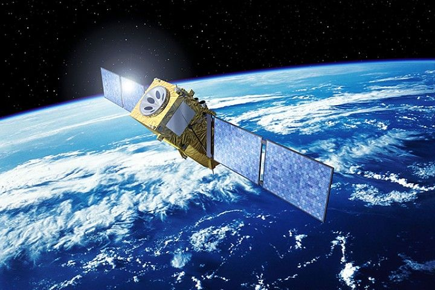
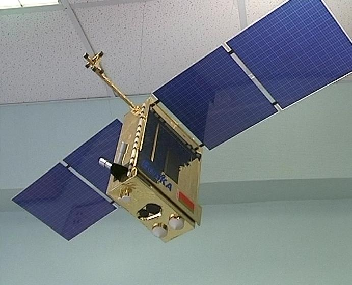
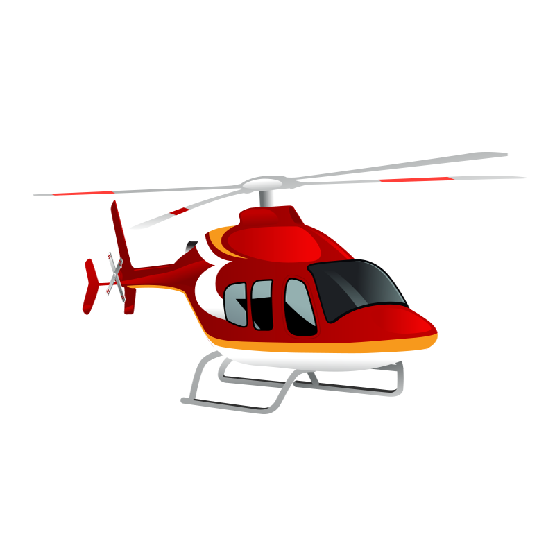
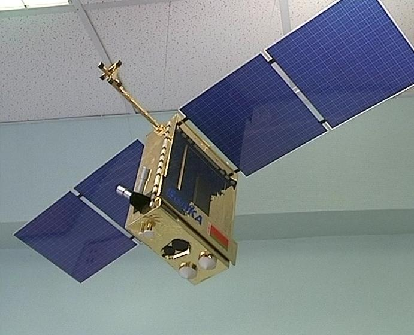
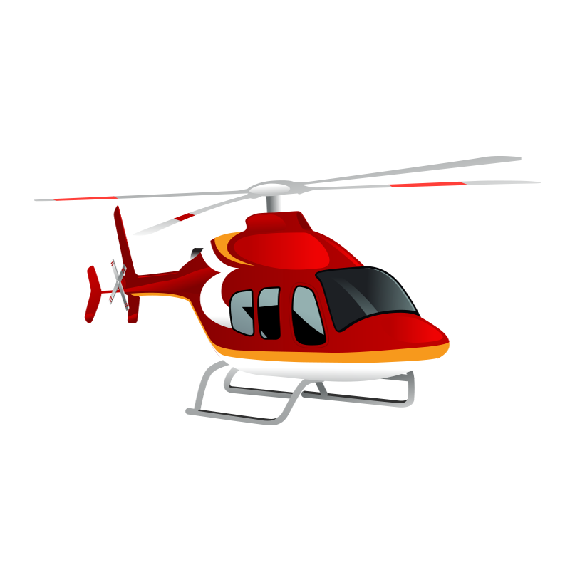
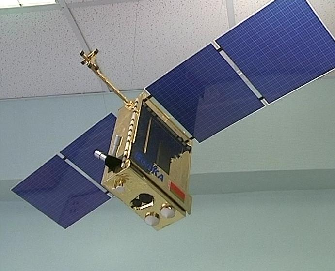
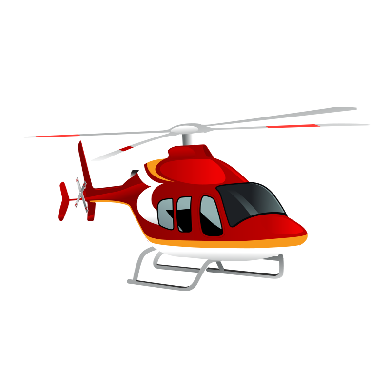

БелКА -2
БелКа - Белорусский космический аппарат
После запуска спутника БКА Республике Беларусь открылись дороги в клуб космических держав.

Сейчас реализуются две крупные программы, связанные с мониторингом и зондированием территорий Земли из космоса, в которых Беларусь принимает непосредственное участие: «Мониторинг – СГ» и «Техника СГ».

Клуб космических Держав

Узнай белорусские спутники

 




